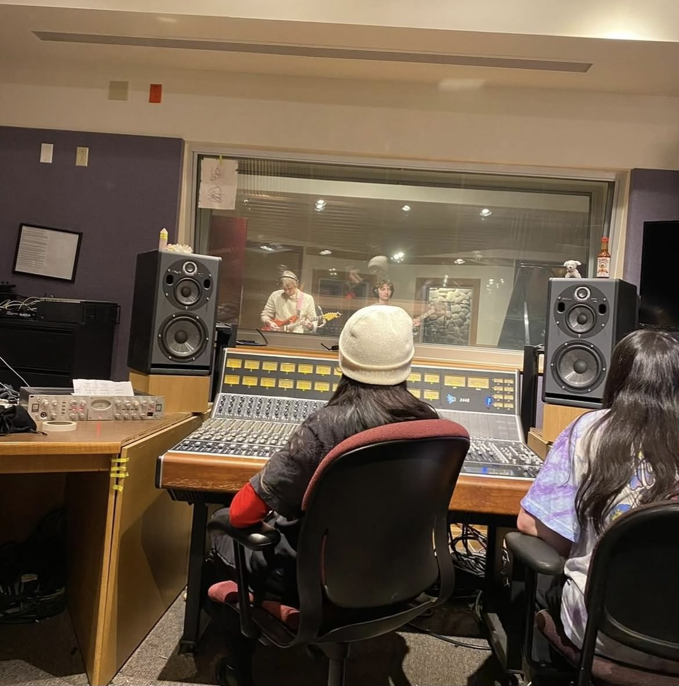
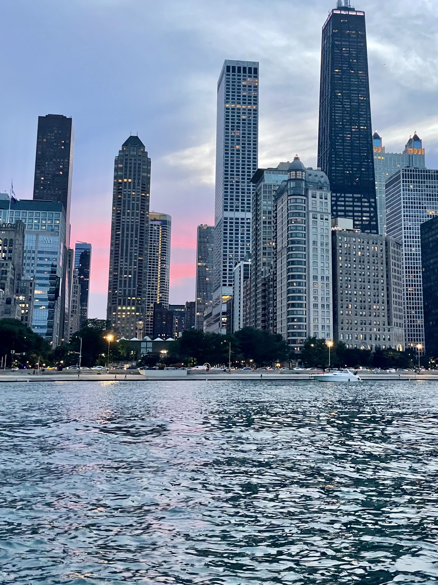
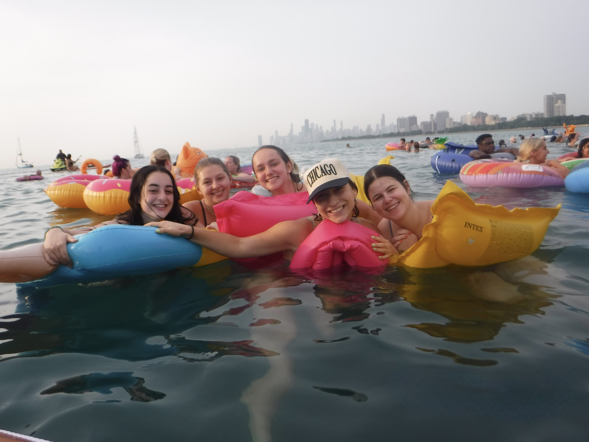
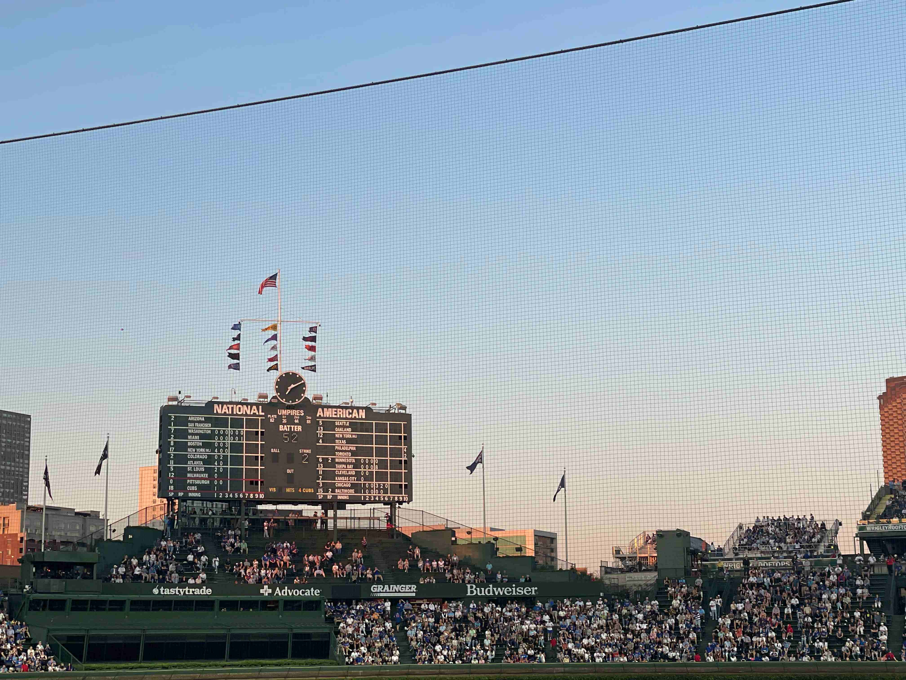

My name is Claire Silverstein, and I am a senior at the University of Denver. I have played music my whole life and want to combine my passion for music with my computer science major. I am currently taking the Audio Recording and Production sequence at school, which has been great. Growing up in Chicago, I was very involved in the music scene and loved getting to grow up in it. In this website, I have compiled some of my favorite Chicago bands and venues. Below are some pictures of me, me in the recording studio, and some pictures of Chicago that I love.
|  |  |  |  |